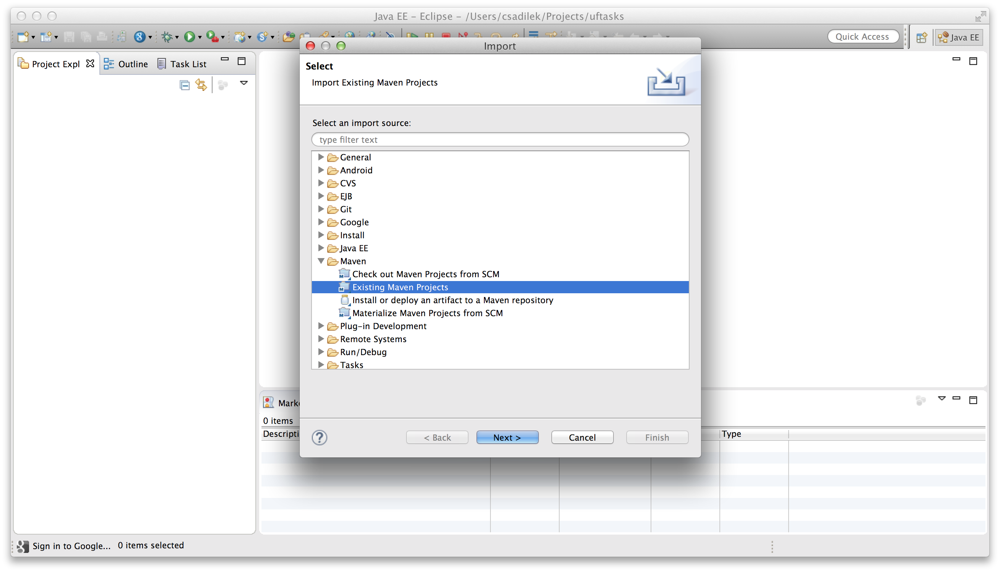

Eclipse
This section will walk you through using Maven tooling for running and debugging your app within Eclipse. If you have not already installed m2e in Eclipse, you will want to do so now.
To install the Maven tooling, use the following steps:
Go to the Eclipse Marketplace under the Help menu in Eclipse.
In the Find dialog enter the phrase Maven and hit enter.
Find the Maven Integration for Eclipse plugin and click the Install button for that entry.

- Accept the defaults by clicking Next , and then accept the User License Agreement to begin the installation.
Import UFtasks Project
Once you have completed the installation of the prerequisites from the previous section, you will now be able to go ahead and import the Maven project you created in the first section of this guide.
Follow these steps to get the project setup:
- From the File menu, select Import…

- You will be presented with the Import dialog box. From here you want to select Maven → Existing Maven Projects 
- From the Import Maven Projects dialog, you will need to select the directory location of the project you created in the first section of this guide. In the Root Directory field of the dialog, enter the path to the project, or click Browse… to select it from the file chooser dialog.

- Click Finish to begin the import process.
- When the import process has finished, you should see your project imported within the Eclipse Project Explorer.

Install additional Maven m2e connectors
You may find that Maven can not build some projects because of missing Maven plugins. These can be automatically installed by opening the pom.xml file and clicking the error message at the top of the Pom editor Overview page:

Click on Discover new m2e connectors and follow the prompts to find and install the missing connectors.
Optional: disable Eclipse built-in Javascript validator
Some of the Javascript code generated by Uberfire does not conform to the ECMAScript 3 standard validator used by Eclipse which will cause Eclipse to report compilation errors. Rest assured, all the generated Javascript builds an runs and these errors will not affect execution of the app. To remove these errors, simply disable the built-in validator with the Javascript -> Validator User Preference setting:

Running UFTasks with Eclipse
- Next you will need to setup a Maven Run Profile for UF tasks. To do so select Run As… > Maven Build…

- Edit the configuration, and your goals should be: clean gwt:run
- Now, click on Run or Debug Button:

- Wait for GWT build and run, and then click on Launch default Browser button:

- See the result in your browser: